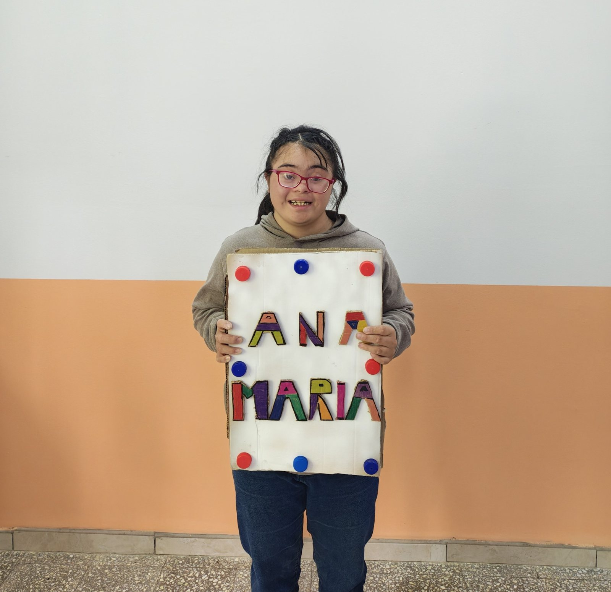
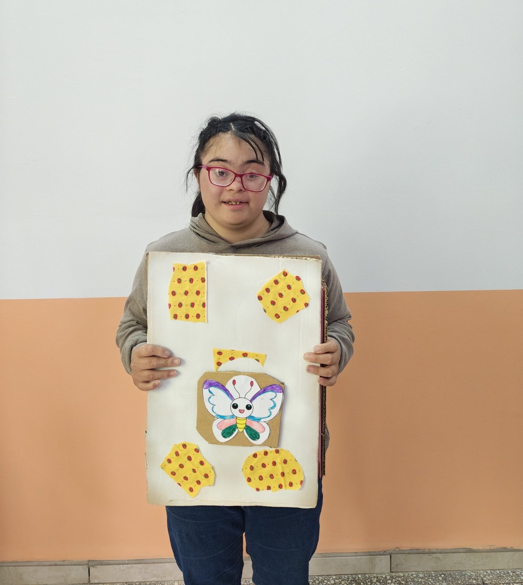
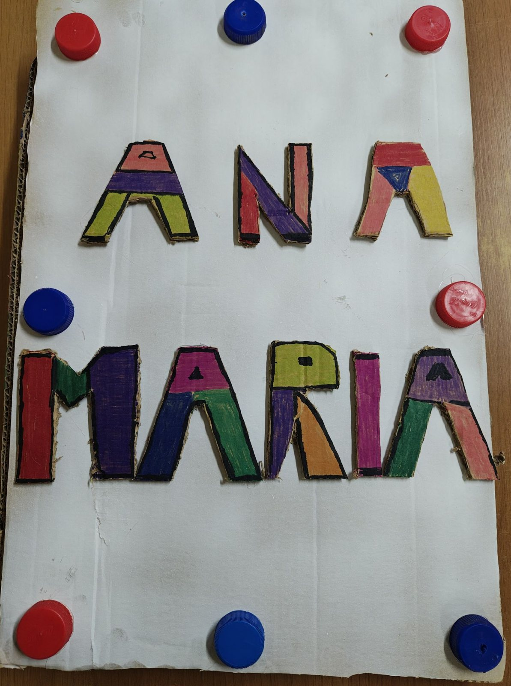
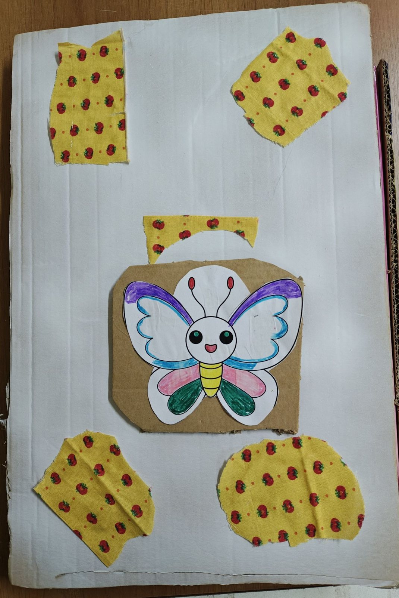

Hola, soy Ana María. Voy a cuarto año y vivo con mis hermanas y mi mamá. Una vez a la semana vamos al campo a ver las ovejas y los caballos.

Lo que me gusta
Me gusta pintar, recortar figuras y hacer cosas con materiales reciclables. También me gusta ver videos de grupos musicales de K-Pop y jugar al fútbol con mis compañeros. Mis colores favoritos son el rojo y el azul, y me gusta hacer tortas fritas.
Mi carpeta reciclada
Este segundo cuatrimestre hice mi carpeta con materiales reciclables: tapitas, retazos de tela, botones y cartones.


